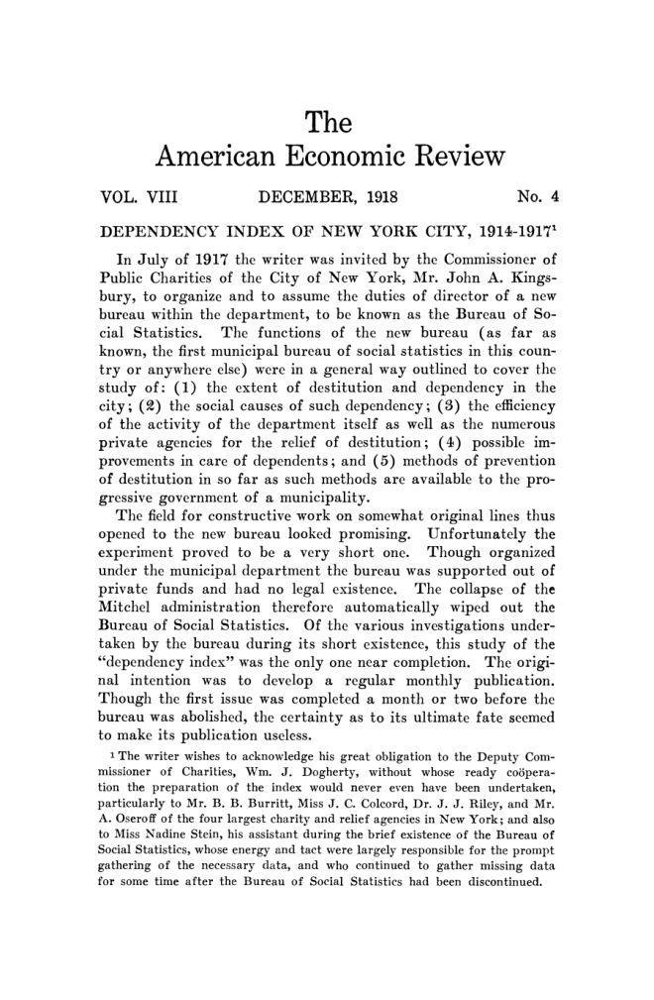

Um índice da dependência, o custo de crescer e as ferrovias falidas
Leitura: 13 min
Rubinow constrói um índice mensal de dependência para Nova York; Mixter, Hoagland e Sprague tratam da fábrica e do trabalho na reconstrução; Dewing explica como se reorganiza uma ferrovia falida.


Em julho de 1917, o comissário de Caridade Pública da cidade de Nova York, John A. Kingsbury, convidou I. M. Rubinow a organizar um Bureau of Social Statistics, que Rubinow descreve como, até onde sabia, o primeiro escritório municipal de estatística social do país ou de qualquer outro lugar. O escritório era mantido com recursos privados e não tinha existência legal; com o fim da administração Mitchel, desapareceu. Seu único estudo quase concluído, um índice mensal de dependência para a cidade, abre o número de dezembro de 1918 da American Economic Review.
Os outros quatro artigos tratam da empresa e do trabalho às vésperas da reconstrução. Charles W. Mixter, do Clark College, discute por que os rendimentos decrescentes também alcançam a indústria; H. E. Hoagland, da University of Illinois, propõe substituir os termos closed shop e open shop; O. M. W. Sprague examina as relações entre trabalho e capital no pós-guerra; e Arthur S. Dewing abre uma série de três artigos sobre a reorganização financeira das ferrovias falidas. Seguem resenhas organizadas por área, listas de livros novos, documentos, resumos de periódicos e as notas.
Como medir a dependência de uma cidade mês a mês?
I. M. Rubinow · “Dependency Index of New York City, 1914–1917” · pp. 713–740
Rubinow parte de uma constatação: a dependência, a necessidade extrema que leva uma família ou uma pessoa a pedir ajuda pública ou privada, sobe e desce com a prosperidade geral, e não havia meio rápido de medi-la. Índices de preços, salários, emprego e compensações bancárias já eram correntes; um índice de dependência seria, até onde sabia, o primeiro. A pretensão era modesta: medir as flutuações, e não o total, da dependência e da procura por assistência, o que dispensava dados completos, desde que fossem representativos.
“Fora do pauperismo profissional, a dependência é uma condição, e não uma qualidade.” (“Outside of professional pauperism, dependency is a condition and not a quality.”)
Os dados foram escolhidos pelo critério da disponibilidade. Rubinow reuniu 15 séries mensais: casos novos e casos sob cuidado de quatro grandes agências de assistência às famílias; pedidos e pessoas atendidas pelo Joint Application Bureau, que cuidava dos sem-teto; pernoites no Municipal Lodging House; enterros gratuitos; pedidos de internação e crianças internadas; pagamentos a hospitais privados por pacientes sem recursos; pacientes novos e consultas em dispensários; e pequenos empréstimos. A base é a média mensal de 1916, único ano com todas as séries completas, e o índice geral é a média simples dos índices, com 12 séries em 1914 e 1915 e 15 a partir de 1916.
As séries se dividem em dois grupos. As de assistência às famílias e aos sem-teto têm forte ciclo anual, sobem no inverno e caem no verão, e variam muito de um ano para outro: refletem sobretudo o desemprego. As de hospitais, dispensários, enterros, internação de crianças e empréstimos são muito mais estáveis e ligadas em boa parte à doença. Para Rubinow, mostram que mesmo na prosperidade máxima resta um resíduo substancial de necessidade, argumento que ele liga ao debate sobre o seguro-saúde. O índice serviria de barômetro nas crises, quando exageros de um lado se chocam com negações do outro.
Por que a fábrica que cresce pode ir à falência?
Charles W. Mixter (Clark College) · “Diminishing Returns in Manufactures” · pp. 741–751
Os clássicos, lembra Charles W. Mixter, excluíram os rendimentos decrescentes da operação direta na indústria: o princípio limitador agia nas atividades extrativas e só chegava à manufatura pelo custo dos alimentos e das matérias-primas. Mixter sustenta que a resistência a toda expansão é universal e que, se não for compensada por invenção ou aperfeiçoamento das artes, há rendimentos decrescentes em qualquer direção em que a escala cresça. Isso explicaria por que sobrevivem tantas pequenas indústrias de artigos finos feitos à mão.
O artigo responde a Arthur S. Dewing, que na revista de dezembro de 1917 formulara uma lei do retorno equilibrado com base na proporção entre custos de trabalho e de capital. Mixter retoma o caso, contado por Dewing, de um fabricante de sapatos bem-sucedido que faliu ao construir uma fábrica maior e mais moderna, e propõe outra explicação: o fabricante exerceu na nova fábrica a mesma capacidade empresarial da antiga. O que cresce com a escala, diz, é o custo gerencial, o overhead da administração.
Ele aponta onde esse custo aparece. A inspeção, que na pequena oficina se faz de olho, por amostras e com especificações guardadas na cabeça, exige numa grande fábrica normas escritas e inspetores; se 500 operários substituem 50, a produção cresce na proporção de 1 para 10, mas o overhead da inspeção cresce mais. O controle de materiais exige um almoxarifado com registros: Mixter cita uma fábrica de relógios com cerca de um milhão de dólares em estoques, boa parte inútil, que continuava a fabricar o que já tinha. E o comando pessoal do dono, em que o despotismo é temperado pela desobediência, desmorona quando ele precisa delegar.
“O suficientemente bom é engenharia de primeira.” (“Good enough is first-class engineering.”)
A saída, para Mixter, é uma invenção na arte da administração: os métodos de sala de planejamento, ou de estado-maior, que permitem a uma empresa pequena crescer com menos custo. Mas também eles podem ser exagerados ou aplicados pela metade, e cabe ao empresário, e a ninguém mais, decidir o que compensa e onde parar.
Closed shop e open shop descrevem o que dizem descrever?
H. E. Hoagland (University of Illinois) · “Closed Shop Versus Open Shop” · pp. 752–762
Com a demanda de guerra por trabalho, os sindicatos haviam recuperado parte do poder de barganha e voltavam a pedir reconhecimento a empregadores que por uma geração se recusaram a recebê-los. H. E. Hoagland observa que o debate sobre o closed shop e o open shop se fazia quase sempre nos termos dos empregadores, aceitos pela imprensa e pelo público sem verificar se correspondiam aos fatos. Seu artigo procura termos que sejam justos com os dois lados e compreensíveis para o público.
Ele enumera sete situações: a empresa que só contrata sindicalizados por julgá-los mais eficientes; a que o faz por medo do sindicato; a que aceita os termos do sindicato sem exclusividade; a que trata com os empregados individualmente por não haver sindicato; a que o faz por escolha, vigiando o sindicato; a que não admite sindicalizados; e a fechada pelo próprio sindicato, em greve. Os sindicatos também diferem, das taxas de admissão nominais às proibitivas, das cotas de aprendizes à restrição aos filhos de associados.
Para os empregadores, o closed shop era um monopólio mantido pela coerção, e o open shop, aberto a todos; para os sindicalistas, o open shop era uma empresa fechada aos sindicalizados. Hoagland mostra que associações de empregadores exigiam contratos individuais em que o trabalhador se comprometia a não aderir a sindicatos e mantinham fichários para afastar ativistas. A Commission on Industrial Relations aprovara por unanimidade uma única resolução: não usar os dois termos e falar em union shop e non-union shop.
A open union shop, explica, exige organizações fortes dos dois lados, a mesma tabela de trabalho e salário para sindicalizados e não sindicalizados e a solução conjunta das queixas. Hoagland julga indefensáveis tanto o closed union shop mantido por um sindicato fechado quanto o closed non-union shop, e considera instáveis os arranjos abertos, nos quais cada lado tenta empurrar a empresa para o seu extremo.
Como evitar que a paz azede as relações entre trabalho e capital?
O. M. W. Sprague · “Relations Between Labor and Capital and Reconstruction” · pp. 763–773
Para O. M. W. Sprague, os problemas do trabalho seriam os mais difíceis da reconstrução. Milhões de homens do Exército e da Marinha teriam de ser absorvidos, os trabalhadores da indústria de guerra mudariam de ocupação e os salários nominais, que haviam subido muito, resistiriam a cair. As condições de guerra fomentavam a desconfiança, e havia sinais de que alguns empregadores pretendiam recuperar terreno na primeira oportunidade. Sprague espera uma queda moderada de preços e salários e lista medidas de governo: limitar temporariamente a imigração, bolsas de trabalho, desmobilização gradual, assentamento em terras e obras públicas de reserva.
O centro do artigo é a eficiência. A guerra mostrara aos empregadores que, em tempo de paz, os assalariados pouco se interessavam pela produtividade, e Sprague propõe que manter esse interesse seja o princípio mais fundamental da administração fabril. O trabalhador não se satisfaz com a vantagem remota de consumidor, e uma máquina nova pode destruir o valor de sua habilidade, risco semelhante à obsolescência que o capital inclui nos custos. Salário por peça, bônus e participação nos lucros falham porque o empregador conserva poder quase absoluto sobre eles; Taylor, nota, confiou inteiramente no bom senso dos empregadores para proteger os trabalhadores.
Por isso Sprague sustenta que o interesse pela produção se estabeleceria mais facilmente entre trabalhadores bem organizados, com forte poder de barganha, e cita a indústria algodoeira de Lancashire, completamente sindicalizada e, segundo ele, das mais eficientes do mundo. Espera que o sindicato aberto se torne a forma usual.
“O sindicato fechado é uma arma de luta.” (“The closed union is a fighting weapon.”)
Propõe ainda a participação dos trabalhadores na gestão, por comitês, e uma comissão do trabalho que tomasse a eficiência como ponto de partida, com representantes do trabalho organizado e de empregadores, a menos que o War Labor Policies Board e outras agências do Departamento do Trabalho conquistassem a confiança das duas partes.
Como se reorganiza uma ferrovia falida?
Arthur S. Dewing · “The Theory of Railroad Reorganization” · pp. 774–795
Com a administração das ferrovias pelo governo, escreve Arthur S. Dewing, encerrava-se o longo período de construção ferroviária americana, de quase noventa anos; desde 1907 a construção nova vinha caindo. Esse período deixou um conjunto de práticas para a reorganização financeira das ferrovias falidas, que Dewing considera uma das realizações mais originais das finanças americanas e analisa numa série de três artigos, dos quais este é o primeiro.
A causa fundamental das falências, sustenta, é a superexpansão, que reduz o retorno por unidade de investimento enquanto aumenta a dívida fundada. A falência é adiada cortando a manutenção e acumulando dívida flutuante, de modo que o tribunal recebe uma ferrovia deteriorada e endividada. Toda reorganização tem, assim, dois fins: reduzir os encargos fixos e obter dinheiro novo, que, dado o crédito abalado, só pode vir dos antigos acionistas.
Dewing divide a história em cinco períodos separados pelos pânicos e mostra a passagem da leniência ao rigor. A New York and Erie, que foi entregue a administradores judiciais em agosto de 1859 com uma dívida flutuante de mais de US$ 8 milhões, foi reorganizada em 1862 sem nenhum sacrifício dos credores hipotecários. A Wabash, que faliu em maio de 1884, já impôs contribuições a acionistas e credores júniores e trocou títulos antigos por novos de juros menores.
Para Dewing, a rejeição do plano brando dos credores ingleses da Atchison em favor do plano final marca a virada. Desde então, a reorganização típica cria uma nova companhia com três classes de títulos, de encargo fixo, de encargo contingente e ações ordinárias, e a ferrovia sai com encargos fixos menores e capitalização total maior.
O que mais há na edição?
As resenhas, organizadas por área, incluem The Real Business of Living, de James H. Tufts, por John R. Commons; Profit and Wages, de G. A. Kleene, por Carl E. Parry; The Chartist Movement, de Mark Hovell, por Edgar S. Furniss; The Chicago Produce Market, de Edwin Griswold Nourse, por Alexander E. Cance; um conjunto de livros sobre o trabalho feminino na guerra, entre eles o de Barbara Drake sobre as mulheres na indústria mecânica, por Edith Abbott; Organized Banking, de Eugene E. Agger, por George E. Putnam; The State Tax Commission, de Harley Leist Lutz, por H. A. Millis; e The Private Wealth of Australia and Its Growth, de G. H. Knibbs, por Willford I. King. Os documentos começam pela comercialização estatal do trigo australiano, por A. M. Sakolski, e trazem a avaliação da Texas Midland Railroad pela Interstate Commerce Commission, um artigo de Lujo Brentano sobre a depreciação da moeda na Alemanha e a nota anual de Irving Fisher sobre a equação de trocas em 1917. As notas anunciam a reunião anual da American Economic Association em Richmond, Virgínia, nos dias 27 e 28 de dezembro, no Hotel Jefferson, com a American Statistical Association e a American Sociological Society.
Na minha leitura
Na minha leitura, a edição trata de custos que não aparecem na contabilidade comum. Rubinow tenta medir a necessidade social antes que ela vire crise; Mixter identifica no overhead gerencial o custo que cresce com a escala; Dewing mostra como a dívida flutuante e a manutenção adiada escondem uma falência até que ela se imponha. Nos três, o problema é de informação: o que não se mede a tempo cobra mais tarde.
Hoagland e Sprague tratam de outro custo, o da desconfiança. O primeiro mostra que os próprios termos do debate trabalhista carregavam a posição de uma das partes; o segundo, que nenhum esquema de incentivo funciona se os trabalhadores não confiam em quem o administra. É o argumento, hoje familiar, de que contratos de incentivo dependem de compromissos críveis.
Glossário
- Dependência
- na definição de Rubinow, necessidade econômica extrema que leva a pedir ajuda pública ou privada.
- Número-índice
- série expressa em relação a um período-base igual a 100.
- Ciclo anual
- variação regular de uma série ao longo dos meses do ano, hoje chamada sazonalidade.
- Dispensário
- ambulatório gratuito ou de taxa simbólica para pacientes sem recursos.
- Rendimentos decrescentes
- queda do acréscimo de produto obtido com cada acréscimo de insumos ou de escala.
- Overhead gerencial
- custo de administração, inspeção, controle e coordenação que cresce com o tamanho da empresa.
- Closed shop
- empresa que, por acordo com o sindicato, só emprega sindicalizados.
- Open shop
- empresa que se declara livre para contratar sindicalizados ou não.
- Sindicato aberto e fechado
- sindicato que admite qualquer trabalhador qualificado, ou que restringe a admissão por taxas, cotas ou parentesco.
- Administração científica
- sistema de organização do trabalho associado a Frederick W. Taylor.
- Administração judicial (receivership)
- gestão de uma empresa insolvente por administradores nomeados pelo tribunal.
- Dívida fundada
- dívida de longo prazo, em geral títulos com garantia hipotecária.
- Encargos fixos
- juros e outros pagamentos devidos qualquer que seja o resultado da empresa.
- Título de renda (income bond)
- título cujos juros só são pagos se houver lucro.
Artigos (5)
- Dependency Index of New York City, 1914-1917 — I. M. Rubinow (pp. 713–740) · resenha acima · comentário completo · JSTOR
- Diminishing Returns in Manufactures — Charles W. Mixter (Clark College) (pp. 741–751) · resenha acima · JSTOR
- Closed Shop Versus Open Shop — H. E. Hoagland (University of Illinois) (pp. 752–762) · resenha acima · JSTOR
- Relations Between Labor and Capital and Reconstruction — O. M. W. Sprague (pp. 763–773) · resenha acima · JSTOR
- The Theory of Railroad Reorganization — Arthur S. Dewing (pp. 774–795) · resenha acima · comentário completo · JSTOR
Resenhas (14)
- James H. Tufts, The Real Business of Living — John R. Commons (pp. 796–797). Resenha de John R. Commons. JSTOR
- G. A. Kleene, Profit and Wages. A Study in the Distribution of Income — Carl E. Parry (pp. 797–800). Resenha de Carl E. Parry. JSTOR
- Mark Hovell, The Chartist Movement — Edgar S. Furniss (pp. 800–803). Resenha de Edgar S. Furniss. JSTOR
- Edwin Griswold Nourse, The Chicago Produce Market — Alexander E. Cance (pp. 810–813). Resenha de Alexander E. Cance. JSTOR
- S. Herzog, The Future of German Industrial Exports — Harry R. Tosdal (pp. 813–815). Resenha de Harry R. Tosdal. JSTOR
- Barbara Drake, Women in the Engineering Trades; Irene Osgood Andrews, Economic Effects of the War upon Women and Children in Great Britain; e outros livros sobre o trabalho feminino na guerra — Edith Abbott (pp. 819–824). Resenha de Edith Abbott. JSTOR
- Eugene E. Agger, Organized Banking — George E. Putnam (pp. 826–828). Resenha de George E. Putnam. JSTOR
- Harley Leist Lutz, The State Tax Commission — H. A. Millis (pp. 829–830). Resenha de H. A. Millis. JSTOR
- Rowland Estcourt, The Conflict of Tax Laws — Anna Youngman (pp. 831–832). Resenha de Anna Youngman. JSTOR
- Peter Alexander Speek, The Single Tax and the Labor Movement — Arthur N. Young (pp. 832–834). Resenha de Arthur N. Young. JSTOR
- Robert Haig, Taxation in the Urban Municipalities of Saskatchewan — W. W. Swanson (pp. 834–837). Resenha de W. W. Swanson. JSTOR
- Percy Gamble Kammerer, The Unmarried Mother — A. B. Wolfe (pp. 840–841). Resenha de A. B. Wolfe. JSTOR
- Émile Vandervelde, Le Socialisme contre l'État — John Graham Brooks (pp. 846–848). Resenha de John Graham Brooks. JSTOR
- G. H. Knibbs, The Private Wealth of Australia and Its Growth — Willford I. King (pp. 850–852). Resenha de Willford I. King. JSTOR
Novos livros (16)
- New Books (pp. 800). Lista de livros recentes da seção de obras gerais, teoria e sua história, com notas breves. JSTOR
- New Books (pp. 804–806). Lista de livros recentes da seção de história econômica e geografia, com notas breves. JSTOR
- New Books (pp. 806–808). Lista de livros recentes da seção de agricultura, mineração, florestas e pesca, com notas breves. JSTOR
- New Books (pp. 808–810). Lista de livros recentes da seção de transportes e comunicações, com notas breves. JSTOR
- New Books (pp. 815–816). Lista de livros recentes da seção de comércio e crises comerciais, com notas breves. JSTOR
- New Books (pp. 817–819). Lista de livros recentes da seção de contabilidade, métodos comerciais, investimentos e bolsas, com notas breves. JSTOR
- New Books (pp. 819). Lista de livros recentes da seção de capital e organização capitalista, com notas breves. JSTOR
- New Books (pp. 824–826). Lista de livros recentes da seção de trabalho e organizações trabalhistas, com notas breves. JSTOR
- New Books (pp. 828–829). Lista de livros recentes da seção de moeda, preços, crédito e bancos, com notas breves. JSTOR
- New Books (pp. 837–838). Lista de livros recentes da seção de finanças públicas, tributação e tarifas, com notas breves. JSTOR
- New Books (pp. 839–840). Lista de livros recentes da seção de população e migração, com notas breves. JSTOR
- New Books (pp. 841–844). Lista de livros recentes da seção de problemas sociais e reformas, com notas breves. JSTOR
- New Books (pp. 844–845). Lista de livros recentes da seção de seguros e pensões, com notas breves. JSTOR
- New Books (pp. 845–846). Lista de livros recentes da seção de pauperismo, caridade e assistência, com notas breves. JSTOR
- New Books (pp. 848–849). Lista de livros recentes da seção de socialismo e empresas cooperativas, com notas breves. JSTOR
- New Books (pp. 852). Lista de livros recentes da seção de estatística e seus métodos, com notas breves. JSTOR
Documentos, periódicos e notas (3)
- Documents, Reports, and Legislation — redação e colaboradores (pp. 853–874). Resumos de documentos oficiais, a começar pela comercialização estatal do trigo australiano, e a nota anual de Irving Fisher sobre a equação de trocas em 1917. JSTOR
- Periodicals — redação e colaboradores (pp. 875–896). Resumos de artigos de periódicos americanos e estrangeiros, por área. JSTOR
- Notes — redação (pp. 897–906). Notas da associação e do meio acadêmico, a começar pelo anúncio da reunião anual em Richmond, Virgínia, em 27 e 28 de dezembro. JSTOR
Fontes
- Dependency Index of New York City, 1914-1917 (pp. 713–740). JSTOR · Internet Archive (PDF)
- Diminishing Returns in Manufactures (pp. 741–751). JSTOR · Internet Archive (PDF)
- Closed Shop Versus Open Shop (pp. 752–762). JSTOR · Internet Archive (PDF)
- Relations Between Labor and Capital and Reconstruction (pp. 763–773). JSTOR · Internet Archive (PDF)
- The Theory of Railroad Reorganization (pp. 774–795). JSTOR · Internet Archive (PDF)
- [untitled] The American Economic Review, (1918-12-01), pages 796-797 (pp. 796–797). JSTOR · Internet Archive (PDF)
- [untitled] The American Economic Review, (1918-12-01), pages 797-800 (pp. 797–800). JSTOR · Internet Archive (PDF)
- New Books (pp. 800). JSTOR · Internet Archive (PDF)
- [untitled] The American Economic Review, (1918-12-01), pages 800-803 (pp. 800–803). JSTOR · Internet Archive (PDF)
- New Books (pp. 804–806). JSTOR · Internet Archive (PDF)
- New Books (pp. 806–808). JSTOR · Internet Archive (PDF)
- New Books (pp. 808–810). JSTOR · Internet Archive (PDF)
- [untitled] The American Economic Review, (1918-12-01), pages 810-813 (pp. 810–813). JSTOR · Internet Archive (PDF)
- [untitled] The American Economic Review, (1918-12-01), pages 813-815 (pp. 813–815). JSTOR · Internet Archive (PDF)
- New Books (pp. 815–816). JSTOR · Internet Archive (PDF)
- New Books (pp. 817–819). JSTOR · Internet Archive (PDF)
- New Books (pp. 819). JSTOR · Internet Archive (PDF)
- [untitled] The American Economic Review, (1918-12-01), pages 819-824 (pp. 819–824). JSTOR · Internet Archive (PDF)
- New Books (pp. 824–826). JSTOR · Internet Archive (PDF)
- [untitled] The American Economic Review, (1918-12-01), pages 826-828 (pp. 826–828). JSTOR · Internet Archive (PDF)
- New Books (pp. 828–829). JSTOR · Internet Archive (PDF)
- [untitled] The American Economic Review, (1918-12-01), pages 829-830 (pp. 829–830). JSTOR · Internet Archive (PDF)
- [untitled] The American Economic Review, (1918-12-01), pages 831-832 (pp. 831–832). JSTOR · Internet Archive (PDF)
- [untitled] The American Economic Review, (1918-12-01), pages 832-834 (pp. 832–834). JSTOR · Internet Archive (PDF)
- [untitled] The American Economic Review, (1918-12-01), pages 834-837 (pp. 834–837). JSTOR · Internet Archive (PDF)
- New Books (pp. 837–838). JSTOR · Internet Archive (PDF)
- New Books (pp. 839–840). JSTOR · Internet Archive (PDF)
- [untitled] The American Economic Review, (1918-12-01), pages 840-841 (pp. 840–841). JSTOR · Internet Archive (PDF)
- New Books (pp. 841–844). JSTOR · Internet Archive (PDF)
- New Books (pp. 844–845). JSTOR · Internet Archive (PDF)
- New Books (pp. 845–846). JSTOR · Internet Archive (PDF)
- [untitled] The American Economic Review, (1918-12-01), pages 846-848 (pp. 846–848). JSTOR · Internet Archive (PDF)
- New Books (pp. 848–849). JSTOR · Internet Archive (PDF)
- [untitled] The American Economic Review, (1918-12-01), pages 850-852 (pp. 850–852). JSTOR · Internet Archive (PDF)
- New Books (pp. 852). JSTOR · Internet Archive (PDF)
- Documents, Reports, and Legislation (pp. 853–874). JSTOR · Internet Archive (PDF)
- Periodicals (pp. 875–896). JSTOR · Internet Archive (PDF)
- Notes (pp. 897–906). JSTOR · Internet Archive (PDF)
- Sumário da edição no JSTOR: The American Economic Review, vol. 8, nº 4.
Documento em domínio público (EUA, publicado antes de 1931), via JSTOR Early Journal Content e Internet Archive. Resumo e comentário do autor deste site, sem afiliação com a American Economic Association. Encontrou um erro? Escreva: a correção é publicada no próprio texto, com data.
← Nº 153 · O trabalhismo britânico, a liga dos agricultores e a sombra das finanças Nº 155 · O paradoxo do imposto de guerra e o preço do papel fixado em juízo →